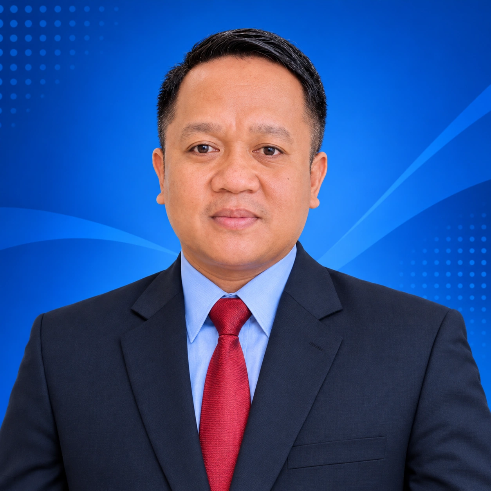

PROFIL PROFESIONAL
Heriyadil
Arsyad.
Anggota Polri · Mahasiswa Ilmu Hukum
Mengabdi dengan integritas.
Terus belajar, terus berkembang.
Kupang, Nusa Tenggara Timur

INTEGRITAS · PENGABDIANTENTANG SAYA
Pengabdian & pengetahuan.
Saya merupakan anggota Kepolisian Negara Republik Indonesia (Polri) yang sedang menempuh pendidikan S1 Ilmu Hukum di Universitas Terbuka.
Saya berkomitmen pada integritas, kedisiplinan, tanggung jawab, dan pengabdian kepada masyarakat. Melalui pendidikan hukum, saya ingin memperluas wawasan tentang hukum, keadilan, serta penegakan hukum di Indonesia.
Saya percaya bahwa pendidikan menjadi bekal penting untuk meningkatkan kualitas diri dan profesionalisme dalam menjalankan tugas.
PENDIDIKAN
S1 Ilmu Hukum
Universitas Terbuka
Sedang menempuh pendidikanPENGEMBANGAN DIRI
Ruang untuk bertumbuh.
Terus mengembangkan kemampuan untuk mendukung peran profesional.
- Komunikasi
- Public speaking
- Literasi digital
IntegritasKedisiplinanTanggung jawabPengabdian